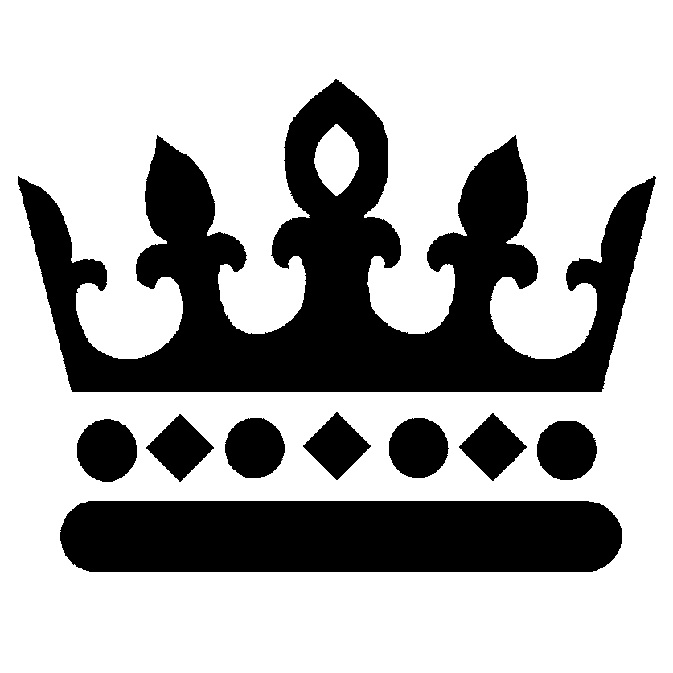

|  | Kuninkaantien lukio Aika kunkku lukioksi |
Lukiomme viestintä- ja markkinointityöryhmä on tehnyt ahkerasti töitä puheenjohtaja lehtori Sari Kauniston johdolla. Nyt työn tulokset alkavat näkyä. Uudet kotisivumme on tehnyt lehtori Juha Andersson. Työryhmä on ollut mukana suunnittelussa ja kommentoimassa työn eri vaiheissa. Valokuvat on ottanut lehtori Päivö Somerma.
Syyslukukauden aikana työryhmän jäsen lehtori Lasse Laukkanen ideoi ja organisoi lukiomme slogan-kilpailun. Kilpailusta kerrottiin päivänavauksessa, ryhmänohjauksessa, tiedotteilla ilmoitustaululla ja Facebook-sivuillamme. Kilpailuun tuli huomattava määrä ehdotuksia niin nykyisiltä opiskelijoilta kuin jo meiltä valmistuneilta. Myös huoltajat innostuivat keksimään omia ehdotuksiaan. Lukion henkilökunta oli myös asiassa aloitteellinen. Sitten oli valintaprosessi, johon me kaikki täällä koulussa olevat pääsimme vaikuttamaan. Kolme parhaiten sijoittunutta ehdotusta palkittiin. Valittu ehdotus sai 60 prosentin kannatuksen niin opiskelijoiden kuin henkilökunnankin keskuudessa.
Lukiomme oli kasvanut organisaationa 14 vuoden kuluessa niin, että meillä oli nyt kanttia sanoa perustellusti ja vähän pilke silmäkulmassa, että
Aika kunkku lukioksi - se on siis uusi sloganimme.
Myös uusi flyer ja juliste otetaan käyttöön. Opettajista tässä asiassa ovat olleet vastuussa Essi Haataja ja Sari Kaunisto. Päivö otti valokuvia. Pohjatyö on tehty graafisen suunnittelun kurssin kurssityönä. Sen jälkeen oli katselmus, jossa raatimme näki esitykset ja kuuli perustelut ja antoi arviot ja tämän jälkeen työryhmä päätyi siihen, että flyerin ja julisteen työstämistä jatkettiin opiskelija Jenny Karjalaisen kanssa. Flyeriä jaetaan esittelyiltapäivissä ja esittelyilloissa. Yläkoulujen opinto-ohjaajat saavat flyerien lisäksi julisteet joko esittelytilaisuuksissa tai sitten postitse.
Vielä on tulossa median lukiodiplomityönä video, joka kertoo talostamme. Facebook-sivujamme kannattaa myös seurata, sinne tulee kuvamateriaalia viikoittain. Samoin tietenkin Kruunun Takaa –verkkolehteämme.
Oikein hyvää alkanutta vuotta 2015!
Merja Rytsy
Rehtori